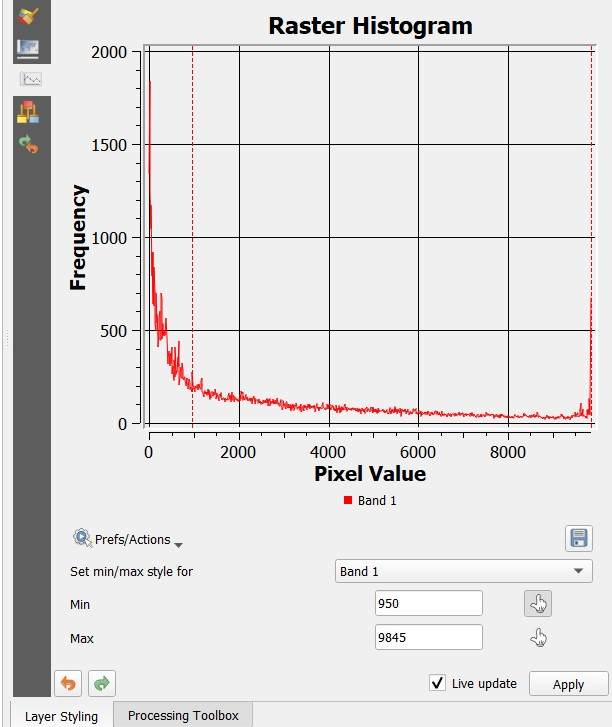

Urban Footprint Analysis of Beitigheim-Bissingen
This is a spatial analysis project mapping the urban footprint of the Beitigheim-Bissingen municipality (Baden-Württemberg, Germany) using QGIS and ESRI Land Cover data. The primary objective was to assess patterns of urbanization within a 10 km buffer zone, offering insights into built-up intensity and suburban expansion around the municipality.
Spatial Visualization: Urban Footprint Map
The binary classification map distinguishes:
- Urban areas (red) – high-density built-up zones.
- Suburban areas (cyan) – lower-density fringe development.
These classes are overlaid with the municipality boundary to contextualize spatial growth. Key observations:
- A concentrated urban core lies within the municipal boundary, likely aligned with the historical center.
- Suburban sprawl radiates into the buffer zone, especially toward the northeast and southeast, hinting at urban growth along transport corridors.
- Southwest and northwest zones remain relatively diffuse, possibly due to rural land use, topography, or zoning constraints.

Density Insights: Built-up Area Heatmap
The second map visualizes the intensity of built-up structures using a heatmap gradient:
- Blue represents low-density (~1).
- Red marks the highest density (~9,845).
The urban core emerges as a dense hotspot, while transitional suburban densities form rings around it. Notable:
- High-density pockets extend toward the northeast and southeast, supporting the idea of corridor-driven development.
- Lower densities prevail in other directions, reinforcing the footprint map’s pattern.
This visual helped distinguish compact urban development from scattered suburbanization.

Histogram Analysis
The raster histogram presents a positively skewed distribution:
- A sharp peak at low pixel values signifies prevalence of low-density or non-built-up pixels.
- A long tail stretches to the maximum (~9,845), indicating fewer but intense urban cores.
By applying a minimum threshold of 950, I isolated meaningful built-up areas while filtering background noise. This ~10% of the max value serves as a functional threshold:
- Helps identify low-density areas that still qualify as urban/suburban.
- Suggests that around 10–15% of built-up pixels may fall into a transitional suburban category, while the rest represents more consolidated urban development.
This informed my reclassification and visual rendering of urban density.
Reflections & Takeaways
This project reveals key aspects of urban growth in Beitigheim-Bissingen:
- The dense urban core reflects historical development patterns likely anchored by rail connectivity, consistent with other cities in the Stuttgart metro region.
- Suburban expansion is evident, particularly to the northeast and southeast, likely shaped by infrastructure and accessibility.
- Sparser development in the southwest and northwest may relate to land-use restrictions, protected zones, or agricultural land.
- Future urbanization is expected to be incremental, constrained by environmental protections in Baden-Württemberg and steered by transport infrastructure.
Methodological Strengths:
- Integration of vector and raster data (municipal boundaries + land cover).
- Use of kernel density estimation and threshold-based classification for precise urban/suburban delineation.
- Application of visualization techniques to communicate spatial patterns effectively.
This project showcases my skills in geospatial analysis, data visualization, and urban planning applications, offering a foundation for further studies on sustainable urban growth. I’d welcome feedback or collaboration on refining density thresholds or expanding this analysis!